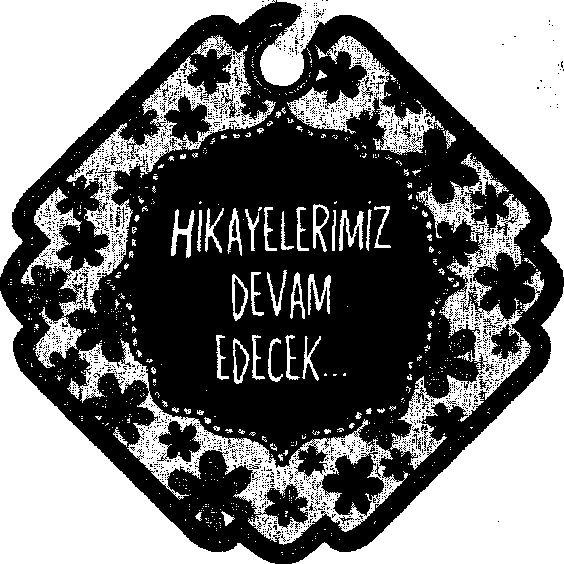

Hintli bir yaşlı usta, çırağının sürekli her şeyden şikâyet etmesinden bıkmıştı. Bir gün çırağını tuz almaya gönderdi. Yaşamındaki her şeyden mutsuz olan çırak döndüğünde, yaşlı usta ona, bir avuç tuzu, bir bardak suya atıp içmesini söyledi.
Çırak, yaşlı adamın söylediğini yaptı ama içer içmez ağzındakileri tükürmeye başladı.
“Tadı nasıl?” diye soran yaşlı adama öfkeyle, “Acı!” diye cevap verdi. Usta gülümseyerek çırağını kolundan tuttu ve dışarı çıkardı. Sessizce az ilerdeki gölün kıyısına götürdü ve çırağına bu kez de bir avuç tuzu göle atıp, gölden su içmesini söyledi. Söyleneni yapan çırak, ağzının kenarlarından akan suyu koluyla silerken, yaşlı adam aynı soruyu sordu: “Tadı nasıl?”
“Ferahlatıcı,” diye cevap verdi genç çırak.
“Tuzun tadını aldın mı?” diye sordu yaşlı adam.
“Hayır,” diye cevapladı çırağı.
Bunun üzerine yaşlı adam, suyun yanına diz çökmüş olan Çırağının yanına oturdu ve şöyle dedi:
“Yaşamdaki ızdıraplar tuz gibidir, ne azdır ne de çok. Izdırabın miktarı hep aynıdır. Ancak bu ızdırabın acılığı, neyin içine konulduğuna bağlıdır. Izdırabın olduğunda yapman gereken tek şey ızdırap veren şeyle ilgili hislerini genişletmektir. Onun için sen de artık bardak olmayı bırak, göl olmaya çalış.”
